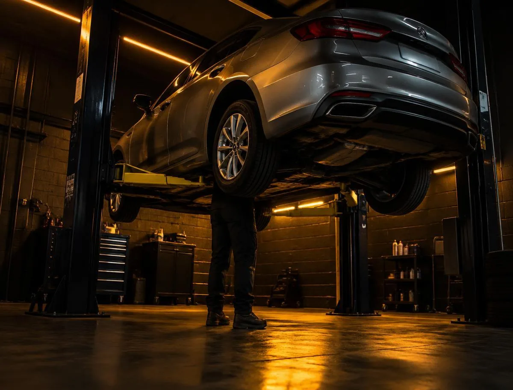
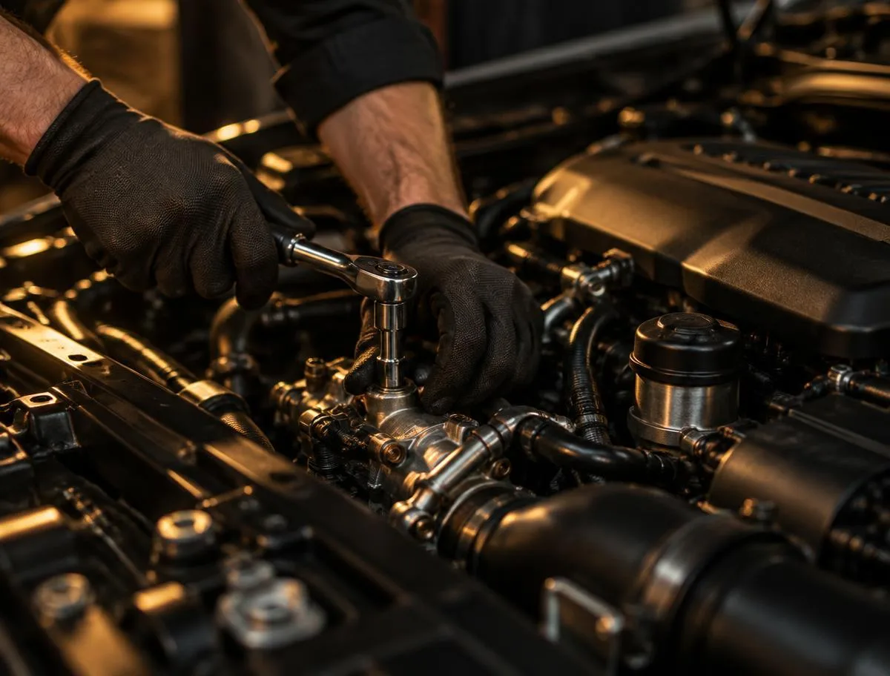
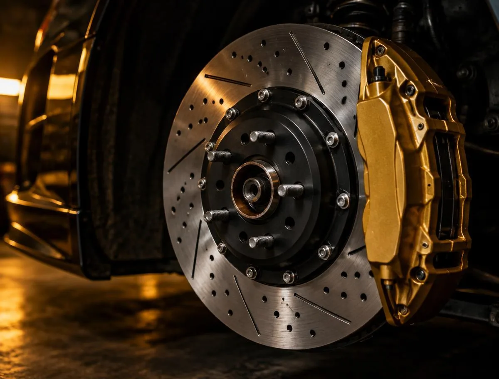

Troca de óleo + filtro
Óleo e filtro conforme a especificação do veículo.
A partir deR$ 149,00
PRECISÃO NO SERVIÇO. CLAREZA NO ATENDIMENTO.
Do diagnóstico à entrega, entenda cada etapa. Conheça os serviços, consulte os valores e monte seu pedido de orçamento.
Serviços descritos com clareza, do primeiro contato ao orçamento.
Diagnóstico para orientar a avaliação, sem adivinhar o problema.
Uma experiência organizada para decidir com tranquilidade.
SERVIÇOS & MANUTENÇÃO
Encontre o serviço e adicione ao seu pedido.
Valores e tempos ilustrativos; o orçamento depende da avaliação do veículo.
Óleo e filtro conforme a especificação do veículo.
Inspeção preventiva e checklist dos principais sistemas.
Avaliação da geometria e do conjunto de rodas.
Avaliação, substituição e teste do sistema de freios.
Inspeção do conjunto e substituição dos componentes.
Verificação de desgaste, folgas e estabilidade.
Inspeção de ruídos e folgas na suspensão.
Leitura de falhas e avaliação antes de qualquer reparo.
Avaliação e troca conforme o plano de manutenção.
Avaliação do sistema, vazamentos e desempenho.
Tabela demonstrativa baseada na referência. Peças, compatibilidade, valores e prazos precisam ser confirmados em uma operação real.
DO PRIMEIRO CONTATO À ENTREGA
Informe seu carro, o sintoma e o serviço que procura.
O diagnóstico orienta o reparo e esclarece o que precisa ser feito.
Confira os itens, os valores e o prazo antes de autorizar.
Revise o serviço realizado e as orientações de manutenção.
A OFICINA POR DENTRO
Uma apresentação visual da estrutura e das especialidades. Espaço, equipamentos e atendimento reunidos em um site que passa confiança.
Conhecer a experiência ↗Imagens ilustrativas do material de referência.



SEU PRÓXIMO PASSO
Não sabe qual serviço escolher? Descreva o que está acontecendo. O diagnóstico vem antes da decisão.
Este modelo gera uma prévia do pedido. Nenhum dado é enviado e nenhum horário é reservado.
HORÁRIOS & ATENDIMENTO
Mooca · São Paulo / localização ilustrativa
ANTES DE TRAZER O CARRO
Não. Conte os sintomas e o histórico do veículo para orientar uma avaliação.
São valores ilustrativos a partir de uma referência. O preço final depende do veículo, das peças e do diagnóstico.
Não. Este é um site demonstrativo. A prévia não envia dados, não reserva horários e não realiza cobranças.
Sim. A BRUSYN pode personalizar a identidade, os serviços, as fotos e configurar os canais reais de contato.